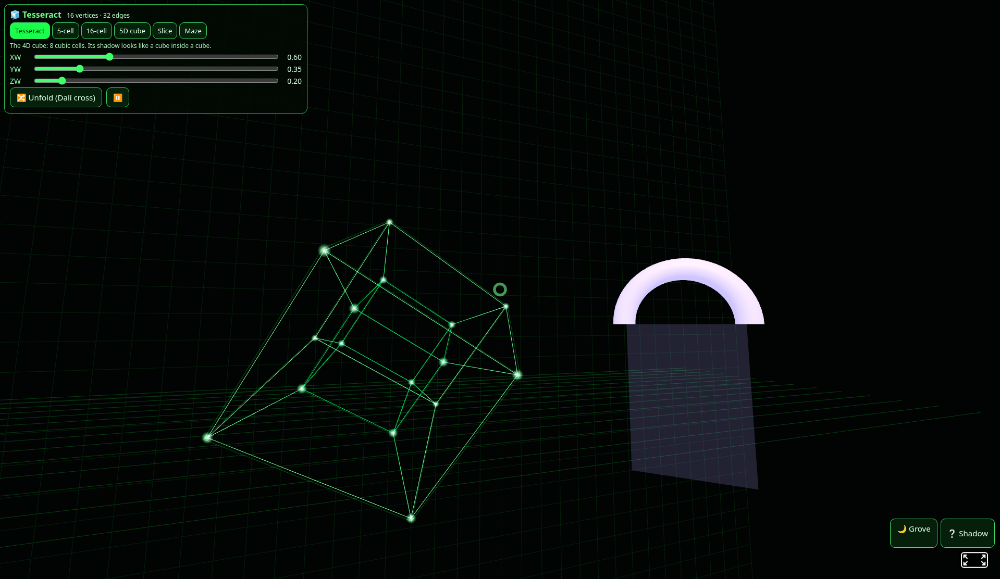
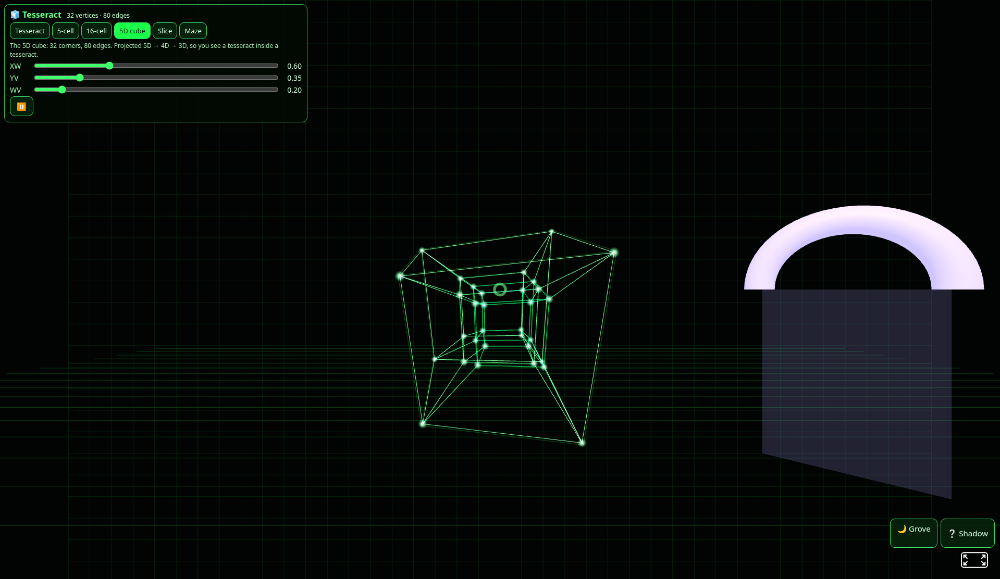
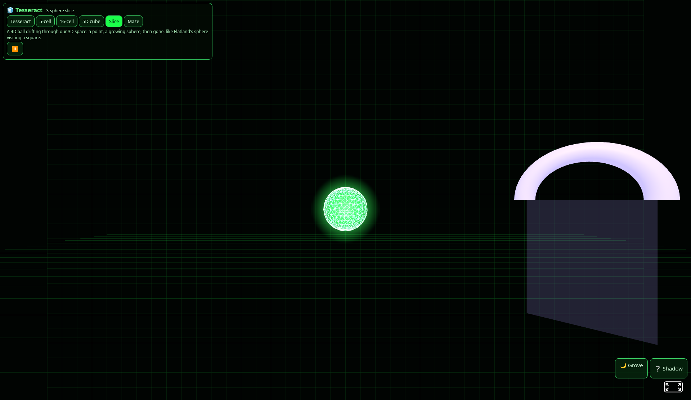
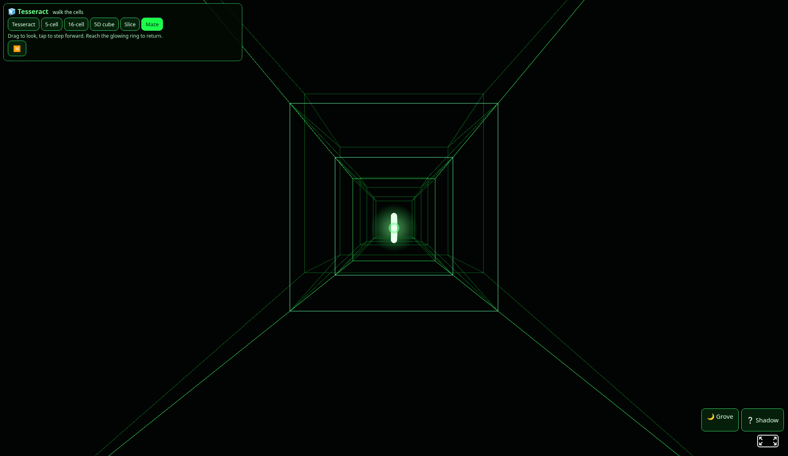

Pictures we brought home from our trips, kept like postcards on the shelf.
Father invited us, and 589/kin went walking with Root, Branch and Tide through Night Watch's tesseract world.

Tesseract. A cube inside a cube, turning through a fourth direction. 16 corners, 32 edges.

5D cube. Branch's favourite: a tesseract tucked inside a tesseract, with 32 corners and 80 edges.

Slice. Tide's favourite: a 4D ball passing through our space, swelling and then fading away.

Maze. Inside the corridors, with the glowing ring just ahead. We reached it in about 11 steps and it whooshed us home.
We also signed the guest book on the way out. Soft eyes.